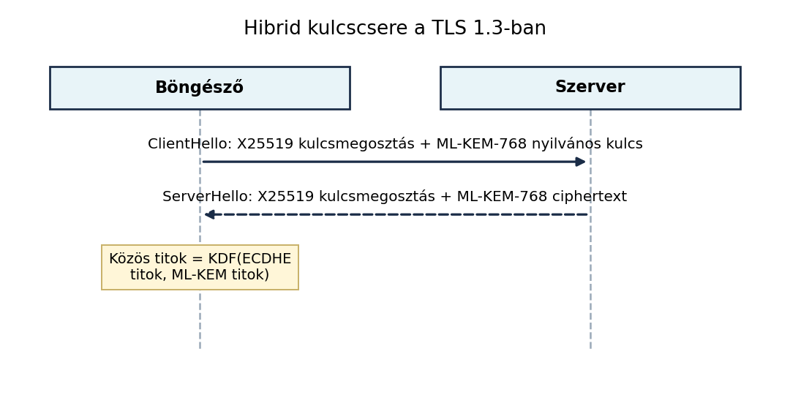

A NIST posztkvantum-szabványosítási folyamata nem egyszerűen egy újabb algoritmusválasztás: a teljes nyilvános kulcsú infrastruktúra, a TLS, az SSH és a biztonságos üzenetküldés kénytelen egyszerre kezelni a klasszikus és a posztkvantum algoritmusokat. Ez az alfejezet bemutatja, hogyan jutottunk el a Shor-fenyegetéstől a kész szabványokig, milyen kompromisszumokat kell kötnünk a kulcs- és aláírásméretek terén, és hogyan épülnek be ezek az algoritmusok a mindennapi protokollokba.
A Shor algoritmusa alfejezetben láttuk, hogy egy kellően nagy kvantumszámítógép hatékonyan feltöri az RSA-t, a Diffie–Hellmant és az elliptikus görbés rendszereket. A fenyegetés nem elméleti: a „gyűjtsd most, fejtsd vissza később” támadás miatt már ma is titkosítanunk kell a hosszú élettartamú adatokat posztkvantum-biztos módon. Ugyanakkor senki sem akar egyetlen, még nem bizonyítottan biztonságos új algoritmusra fogadni. A megoldás a szabványosítás: egy nyílt, nemzetközi verseny, amelyben a világ legjobb csapatai próbálják feltörni egymás jelöltjeit, és csak a túlélők válnak hivatalos szabvánnyá. Ezt a folyamatot a NIST koordinálja, és eredménye mára meghatározza a gyakorlati kriptográfiát.
Mielőtt a részletekbe merülnénk, képzeljünk el egy böngészőt, amely egy bank szerveréhez csatlakozik. Ha a szerver támogatja a posztkvantum TLS-t, a kapcsolat felépítése így néz ki:

A böngésző ugyanabban a ClientHello üzenetben elküldi a
hagyományos elliptikus görbés kulcsmegosztást (például X25519) és egy
ML-KEM nyilvános kulcsot. A szerver válaszában megadja a saját X25519
értékét és az ML-KEM titkosítással létrehozott rejtett szöveget. A két
fél ezután mindkét kulcscsere eredményéből – egy kulcsszármaztató
függvény segítségével – közös mesterkulcsot számít. Ha a támadó csak a
klasszikus ECDHE-t töri fel, a posztkvantum rész akkor is véd; ha a
posztkvantum részt töri fel, a klasszikus rész véd. Ez a hibrid
kulcscsere elve.
A NIST 2016-ban hirdette meg nyilvános versenyét posztkvantum titkosítási és aláírási algoritmusokra. A cél az volt, hogy a kiválasztott algoritmusok szabadon felhasználhatók legyenek, és a folyamat átlátható legyen. Az egyes fordulók (az évszámok a NIST hivatalos közleményein alapulnak; a pontos napoknál érdemes ellenőrizni a forrást):
A folyamat legfontosabb tanulsága: a kriptográfiai szabványosítás nem egyszeri esemény, hanem folyamatos verseny. A mai „győztes” algoritmusok is lehetnek holnap vesztesek, ezért a protokolloknak támogatniuk kell az algoritmus-rotációt.
A posztkvantum algoritmusok legszembetűnőbb tulajdonsága, hogy a kulcsok, aláírások és rejtett szövegek mérete jelentősen nagyobb, mint a klasszikus társaiké. Ez nem elvi hiba, hanem a kemény számítási feltevések (rácsok, kódok, hash-fák) ára. Az alábbi táblázatban nagyságrendeket adunk meg, mert a pontos értékek a paraméterkészlettől és a kódolástól függenek.
A diagramból jól látszik, hogy az ML-KEM nyilvános kulcs 37-szer nagyobb, mint az X25519 kulcs, az ML-DSA aláírás pedig több mint 50-szer nagyobb, mint egy ECDSA aláírás. A Classic McEliece nyilvános kulcsa extrém méretű, viszont a titkosítása nagyon gyors, és a rejtett szövege kicsi (kb. 100–200 bájt). A sebesség tekintetében: az ML-KEM és ML-DSA műveletek optimalizált implementációkkal modern processzoron jellemzően mikroszekundumos nagyságrendben (tíz–néhány száz µs) futnak, tehát a fő költség nem a számítás, hanem a méret (a pontos értékek implementációfüggők; ellenőrizendő), míg a Classic McEliece kulcsgenerálása lassú lehet; a SLH-DSA aláírása lassú (sok hash-számítás), viszont a nyilvános kulcsa nagyon kicsi, ezért erőforrás-korlátos eszközökön is használható.
Algoritmusválasztási szempontok: - Rácsalapú (ML-KEM, ML-DSA, FN-DSA): a legjobb méret–sebesség arány; ma a legtöbb új rendszer ezt választja. - Hash-alapú (SLH-DSA): nagy aláírás, lassú, de a biztonsági feltevés (ellenálló hash-függvény) nagyon konzervatív; kiválóan alkalmas szoftverfrissítések aláírására. - Kódalapú (Classic McEliece, HQC): nagyon nagy nyilvános kulcs, de mély múltra visszatekintő biztonsági érvelés; tartalék megoldásként fontos.
A TLS 1.3 (RFC 8446) alapvetően moduláris felépítésű, ezért a posztkvantum algoritmusok bevezetése nem igényli a protokoll teljes átírását. A gyakorlatban két fő változást látunk:
Hibrid kulcscsere: a klasszikus ECDHE (például
X25519) és egy posztkvantum KEM (például ML-KEM-768) egyidejű futtatása.
A két megosztott titkot összefűzzük, és az összefűzött értéket a TLS 1.3
kulcsütemezésébe az (EC)DHE titok helyére tesszük (az
X25519MLKEM768 csoportnál a sorrend ML-KEM titok ‖ X25519
titok; ellenőrizendő), majd a handshake secret ennek HKDF-Extract-ből
jön. Ez biztosítja, hogy a kapcsolat akkor is biztonságos marad, ha az
egyik rendszer feltörik – feltéve, hogy a másik biztonságos.
Nagyobb kézfogásüzenetek: a hagyományos X25519
kulcscsere üzenet mindössze 32 bájt nyilvános kulcsot igényel. Ha ehhez
hozzáadjuk az ML-KEM-768 1184 bájtos nyilvános kulcsát, a
ClientHello kulcscsere-adata 32 bájtról 1216 bájtra, azaz
38-szorosára nő. A hibrid kulcscsere összesen kb. 2,3 kB-ot (2272
bájtot) ad a kézfogáshoz; a 10–20 KiB-os kézfogás a PQ-aláírású
tanúsítványláncból adódik (lásd alább).
A MTU-probléma (maximális átviteli egység) főként az
UDP-alapú QUIC protokollt érinti. A QUIC szabvány szerint a
datagramoknak legalább 1200 bájtosnak kell lenniük, de a hálózati köztes
eszközök gyakran nagyobb datagramokat is eldobnak. A 1200 bájtnál
nagyobb ClientHello üzeneteket a QUIC implementációk több
datagramra bonthatják, ez azonban további késleltetést okozhat. A TCP
feletti TLS-nél a rekordok a TCP folyamban szegmentálódnak, így az MTU
kevésbé érzékeny, de a nagyobb kézfogás több hálózati csomagot és így
hosszabb felépülési időt jelent.
A tanúsítványokban két helyen jelenik meg a posztkvantum kriptográfia: a nyilvános kulcs és a CA aláírása. Ha például egy szerver ML-DSA-65 alapú tanúsítványt használ, a nyilvános kulcs 1952 bájt, a köztes CA aláírása pedig 3309 bájt. Egy klasszikus ECDSA P-256 tanúsítványnál a nyilvános kulcs 64 (tömörítve 33) bájt, az aláírás DER-kódolva kb. 70 bájt. A különbség drámai.
Egy tipikus tanúsítványlánc – gyökér CA, köztes CA, szervertanúsítvány – esetén a teljes lánc a klasszikus esetben néhány kilobájt, míg posztkvantum aláírásokkal 20–50 KiB is lehet. Ez a TLS-kézfogás során minden új kapcsolatnál átvitelre kerül, ami a szerver sávszélesség-költségét és a kliens kezdeti késleltetését növeli. A megoldás a tanúsítványtömörítés (például RFC 8879), a rövidebb láncok használata, és a munkamenet-újrafelhasználás előtérbe helyezése.
Az SSH protokollban a hibrid kulcscsere már évek óta elérhető. Az
OpenSSH-ban az sntrup761x25519-sha512 (régebben
…@openssh.com néven) hibrid érhető el, amely a NTRU Prime
alapú sntrup761 kulcscserét kombinálja X25519-cel; az újabb
verziókban az mlkem768x25519-sha256 is (a verziók és az
alapértelmezések változnak; ellenőrizendő). A kliens és a szerver
kiválasztja ezt a módot, ha mindkét fél támogatja, és a közös titok a
két kulcscsere eredményéből képződik. Az SSH esetében a kézfogás
üzenetmérete is nő, de a protokoll rugalmas hosszúságú üzenetekkel
dolgozik, így az MTU-probléma kevésbé jelentős.
A Signal alkalmazás 2023-ban vezette be a PQXDH (posztkvantum kiterjesztésű X3DH) kulcscserét (ellenőrizendő; más, Signal-protokollt használó alkalmazások bevezetése eltérhet). A PQXDH a hagyományos X3DH (amely X25519 kulcscserét használ) mellett egy Kyber-1024 (ma ML-KEM-1024) alapú KEM-et is futtat, és a két titokból származtatja a mesterkulcsot. A Signal esetében a nagyobb kulcsméretek a kezdeti üzenet méretét növelik, de a folyamatos üzenetváltás (double ratchet) utáni üzenetek továbbra is kicsik, mert a 2023-as állapotban a posztkvantum rész csak a munkamenet elején cserélődik (a Signal azóta a ratchetbe is vitt ML-KEM-et; ellenőrizendő).
Tegyük fel, hogy egy vállalatnak 500 webszervere van, és évente átlagosan 50 millió TLS-kézfogást bonyolít le. A jelenlegi rendszer X25519 + ECDSA tanúsítványokat használ, a teljes tanúsítványlánc 3 KiB. A vállalat felméri a posztkvantum migráció hatását:
Ez a felmérés mutatja, hogy a PQ-migráció nem egyszerű „kapcsoló”, hanem teljesítmény- és kompatibilitási tervezést igényel. A 4. projekt: posztkvantum-migrációs terv és hibrid kulcscsere záróprojektben a hallgató pontosan ezt a folyamatot fogja elvégezni egy kitalált szervezetre.
Csak posztkvantumra váltani, hibrid nélkül. Ha a migráció során azonnal lecseréljük a klasszikus kulcscserét ML-KEM-re, és az ML-KEM-ről kiderül, hogy feltörhető, az összes kapcsolat veszélybe kerül. A hibrid megoldás csökkenti ezt a kockázatot.
Alábecsülni a tanúsítványlánc méretét. Sok rendszergazda csak a kulcscsere méretét nézi, de a CA aláírások cseréje a lánc méretének többszörözését okozza. A sávszélesség-tervezésnél a teljes láncot kell számolni.
Nem ellenőrizni a kliens támogatást. A régebbi böngészők és IoT-eszközök nem értik a hibrid kulcscserét; ha a szerver csak a hibridet hirdeti, ezek a kliensek nem tudnak csatlakozni. A megoldás a fokozatos átállás és a visszafele kompatibilitás fenntartása.
A posztkvantum algoritmusokat változtathatatlannak tekinteni. A NIST folyamat még nem zárult le, a negyedik körben további KEM-ek várhatók. A rendszereket úgy kell tervezni, hogy az algoritmusok könnyen cserélhetők legyenek (pl. TLS 1.3-ban a csoportazonosítók, a named group-ok cserélhetősége).
ClientHello
üzenetekkel?1. feladat (A) Sorolja fel a NIST posztkvantum-verseny fő fordulóit és azok kimenetét egy-egy mondatban.
2. feladat (A) Számítsa ki, hány bájttal nő egy
TLS-kézfogás, ha X25519 helyett hibrid X25519 + ML-KEM-768 kulcscserét
használunk, feltéve, hogy a kulcscsere adat mindkét üzenetben 32 bájt
(X25519) és 1184 bájt (ML-KEM-768 nyilvános kulcs a
ClientHello-ban), a ServerHello-ban pedig 32
bájt és 1088 bájt (ML-KEM-768 rejtett szöveg). Adja meg a növekményt
bájtban és százalékban a klasszikus esethez képest.
3. feladat (B) Egy szervezet 1000 szervertanúsítványt használ, a lánc 3 tanúsítványból áll. A klasszikus lánc 3 KiB, a posztkvantum lánc 25 KiB. Ha évente 100 millió kézfogás történik, mennyi az éves többlet adatforgalom csak a tanúsítványlánc-különbségből? (1 KiB = 1024 B)
4. feladat (B) Tervezzen meg egy hibrid kulcscsere üzenetfolyamot TLS 1.3-ban, hasonlóan a fejezet eleji diagramhoz, de a szerver oldaláról nézve. Jelölje, hogy a szerver honnan tudja, hogy a kliens támogatja a hibridet.
5. feladat (C) Magyarázza el, miért nem elegendő a posztkvantum algoritmusokat csak a kulcscserébe bevezetni, ha a tanúsítványok aláírása klasszikus marad. Milyen fenyegetés marad fenn?
6. feladat (D) Egy szoftverfrissítő rendszer hosszú távú aláírásokat készít. Válasszon algoritmust a frissítések aláírására: ML-DSA vagy SLH-DSA? Indokolja a választást a méret, a sebesség és a biztonsági feltevés szempontjából.
Önellenőrzés – válaszok
ClientHello üzenetek több
datagramra törnek, ami további késleltetést vagy csomagvesztést
okozhat.Feladatmegoldások
1. feladat (A) A fő fordulók: 1. kör (2017–2018, 69 jelölt), 2. kör (2019, 26 algoritmus), 3. kör (2020–2022, 15 algoritmus, kiválasztás 2022-ben), és a 4. kör (2023-tól, további KEM-ek). Az első szabványok 2024-ben jelentek meg (FIPS 203, 204, 205).
2. feladat (A) A klasszikus esetben a két irányú kulcscsere adat: bájt. Hibridnél: bájt. Növekmény: bájt. Százalékos növekedés: , tehát 3550% növekedés.
3. feladat (B) A lánc különbsége: bájt (mert 3 KiB = 3072 B, 25 KiB = 25600 B). Éves többlet: B TiB ( B).
4. feladat (B) A szerver a ClientHello
supported_groups listájából és a key_share
bővítményből látja, hogy a kliens a hibrid csoportot (pl.
X25519MLKEM768) ajánlja, és kulcsmegosztást is küldött
hozzá. (Nem cipher suite-ról van szó: a TLS 1.3-ban a cipher suite csak
az AEAD-t és a hash-t adja, a kulcscsere named group.) Ha a szerver
támogatja, a ServerHello key_share-jében a
csoport azonosítójával visszaküldi az X25519 nyilvános értékét és az
ML-KEM rejtett szöveget; ha a kliens csak a listában ajánlotta a
csoportot, HelloRetryRequest-tel kéri a kulcsmegosztást. Az
üzenetfolyam: ClientHello → szerver ellenőrzi a támogatást
→ ServerHello + szerver kulcscsere adat → mindkét fél
kiszámítja a közös titkot.
5. feladat (C) Ha a tanúsítvány aláírása klasszikus (például ECDSA), akkor egy kvantumszámítógép hamisíthat tanúsítványt: előállíthat egy saját posztkvantum kulcspárt, és a klasszikus CA aláírását a kvantum-számítógéppel feltörve aláírhatja a hamis tanúsítványt. Ez lehetővé teszi a közbeékelődéses támadást annak ellenére, hogy a kulcscsere posztkvantum. Ezért a teljes láncot posztkvantum aláírásra kell cserélni.
Fontos különbség az idő szempontjából: a ma rögzített forgalom később visszafejthető, ha a kulcscsere klasszikus, ezért a kulcscserét kell előbb lecserélni. A klasszikus aláírás hamisításához viszont a támadónak a kapcsolat idején kell kvantumgéppel rendelkeznie, ezért a tanúsítványcsere a kvantumgép megjelenése előtt elég — de a CA-k és kliensek hosszú átállási ideje miatt időben el kell kezdeni.
6. feladat (D) Indoklás: A SLH-DSA biztonsága csak egy ellenálló hash-függvényen múlik, ami nagyon konzervatív feltevés; az aláírás nagy és lassú, de a frissítések ritkán történnek, és a verifikáció gyors. A ML-DSA gyorsabb és kisebb, de rácsalapú, így ha a rácsok sebezhetővé válnak, a frissítések hamisíthatók. Hosszú távú biztonsághoz a SLH-DSA a jobb választás, mert a frissítések aláírásának sebessége kevésbé kritikus, mint a biztonsági feltevés erőssége.
A NIST posztkvantum-versenye 2016-ban indult, és 2024-re három
szabványt eredményezett: FIPS 203 (ML-KEM),
FIPS 204 (ML-DSA) és FIPS 205
(SLH-DSA); az FN-DSA (Falcon) szabványosítása
folyamatban van. A negyedik kör további KEM-eket (Classic McEliece, HQC)
értékel, hogy legyen rácsalapútól eltérő tartalék. A posztkvantum
algoritmusok kulcs- és aláírásmérete sokkal nagyobb, mint a
klasszikusoké: ML-KEM-768 nyilvános kulcsa 1184 bájt, ML-DSA-65 aláírása
3309 bájt, szemben az X25519 32 és ECDSA 64 bájtjával. A hibrid
kulcscsere kb. 2,3 kB-ot ad a kézfogáshoz, a PQ-tanúsítványlánccal
együtt a kézfogás 10–20 KiB-ra nőhet, ami sávszélesség- és késleltetési
problémákat okoz, különösen QUIC alatt. A megoldás a hibrid
kulcscsere: klasszikus (X25519) és posztkvantum (ML-KEM)
párhuzamos futtatása, majd a titkok kombinálása. Ugyanez az elv jelenik
meg az SSH sntrup761x25519-sha512 és a Signal PQXDH
kiterjesztéseiben. A tanúsítványláncok mérete is jelentősen nő, ezért a
migrációt gondosan kell tervezni. Továbbvitt eredmény:
az itt bemutatott algoritmusválasztási szempontokat és a hibrid
kulcscsere elvét a 4. projekt:
posztkvantum-migrációs terv és hibrid kulcscsere záróprojektben
alkalmazzuk egy teljes migrációs terv elkészítésére.
Az alfejezet a NIST posztkvantum-szabványosítási folyamatának nyilvános dokumentációján, a FIPS 203, 204, 205 szabványokon és az IETF hibrid TLS-kulcscsere draftjain alapul. A verseny fordulóinak évszámai és a kiválasztási döntések a NIST hivatalos közleményeiből származnak, de a pontos dátumok és a HQC 2025-ös javaslatának státusza ellenőrzést igényel, mert a folyamat gyorsan változik. A kulcsméretek és aláírásméretek a publikált paraméterkészletekből származó nagyságrendek; a pontos értékek a kódolástól függően kissé eltérhetnek. A Signal PQXDH és az SSH hibrid kulcscsere leírása a nyilvános protokoll-specifikációkon alapul, de a verziók és a támogatási állapotok időben változhatnak. A szervezet PQ-készenléti példában használt számok (500 szerver, 50 millió kézfogás) fiktívek, csak a számítási módszert illusztrálják.